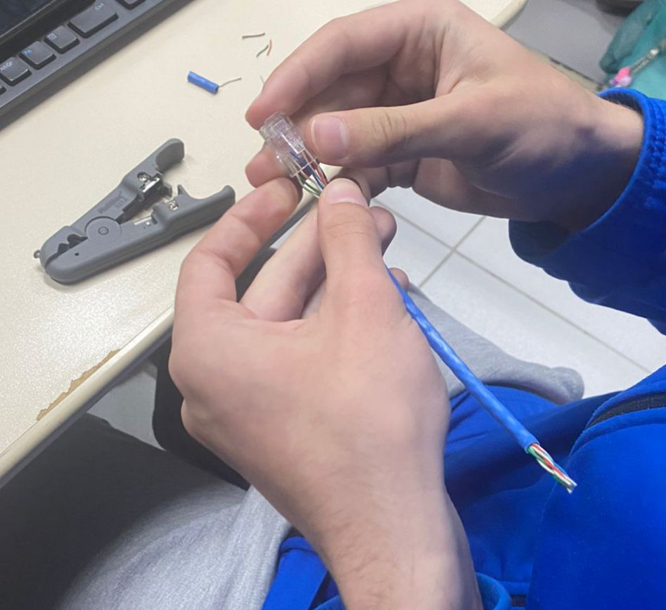

Serviços de Redes
Elementos e componentes de uma rede interna


Conceito de servidor
Um servidor web é um software ou hardware projetado para fornecer conteúdos ou serviços na web. Seu principal papel é armazenar, processar e entregar páginas da web aos navegadores dos usuários, seguindo o protocolo HTTP (ou o mais seguro HTTPS).
Servidor DNS
Os servidores DNS convertem solicitações de nomes em endereços IP, controlando qual servidor um usuário final alcançará quando digitar um nome de domínio no navegador da web.
Servidor HTTP
É um protocolo ou conjunto de regras de comunicação para comunicação entre cliente e servidor. Quando você visita um site, o navegador envia uma solicitação HTTP ao servidor Web.

Servidor DHCP
O servidor DHCP armazena as informações de configuração em um banco de dados que inclui: Os parâmetros de configuração TCP/IP válidos para todos os clientes na rede. Endereços IP válidos.
Serviço de cripagem de cabos
Cabo de Rede - Pinagem

Modelo OSI
O modelo Open Systems Interconnection (OSI) é uma estrutura conceitual que divide as funções de comunicação de rede em sete camadas.

Modelo TCP/IP
O modelo TCP/IP é dividido em quatro camadas, cada uma com funções específicas: